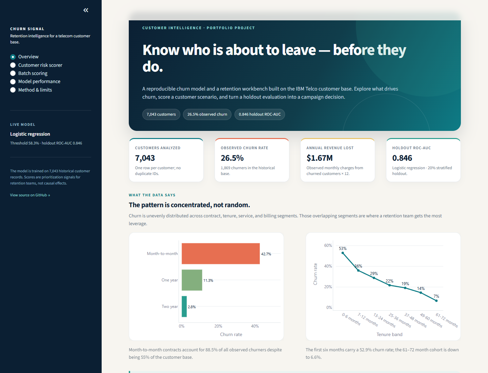
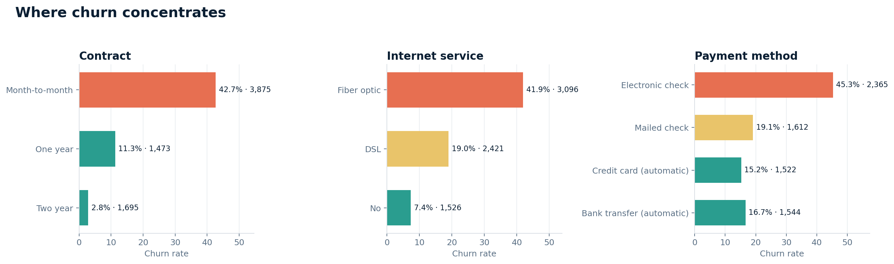
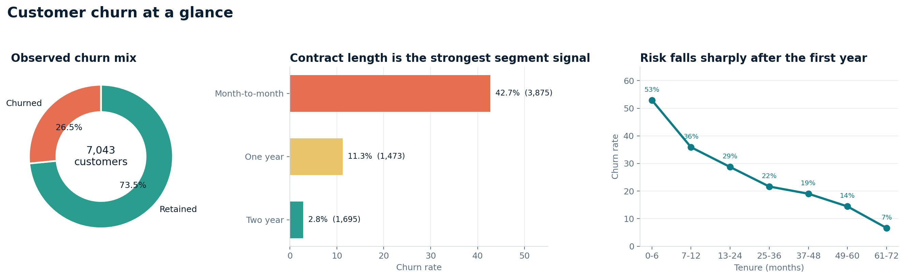
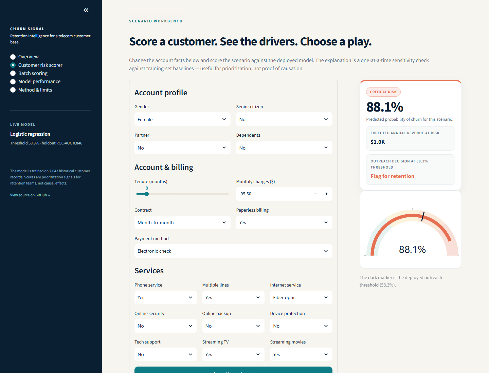
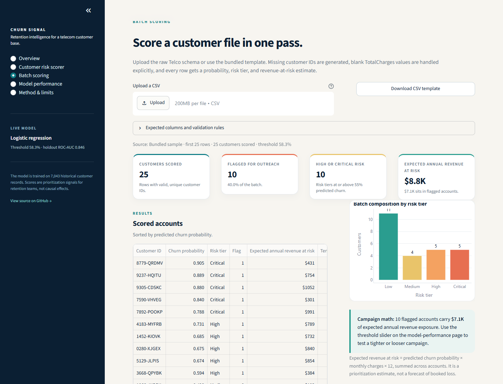
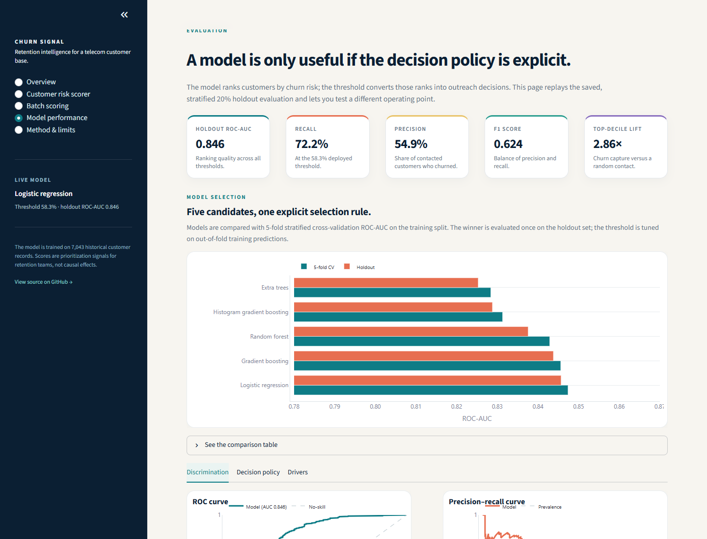
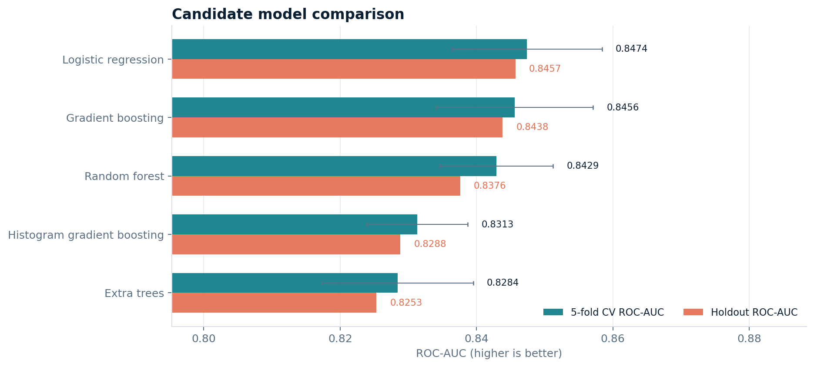
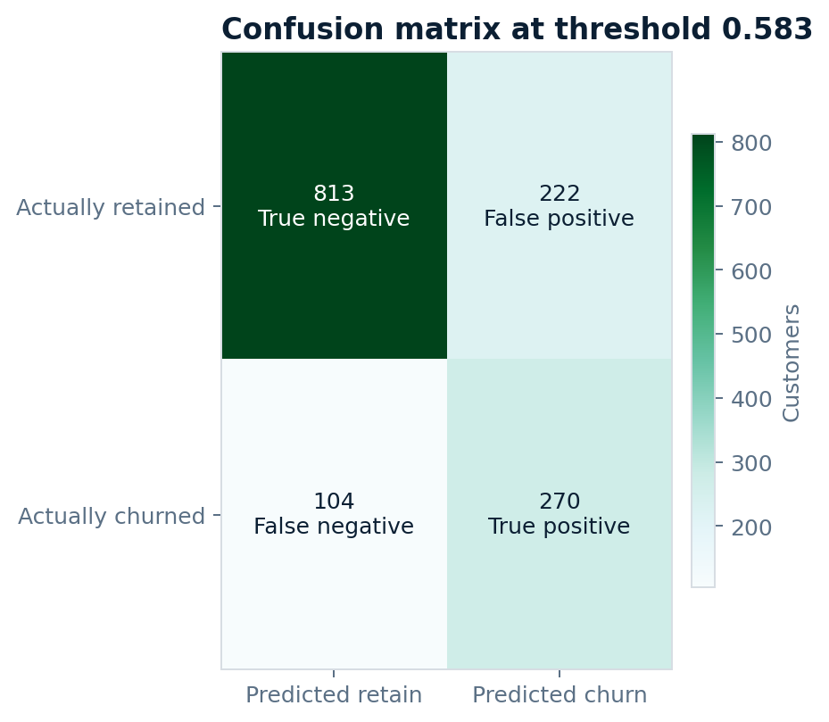
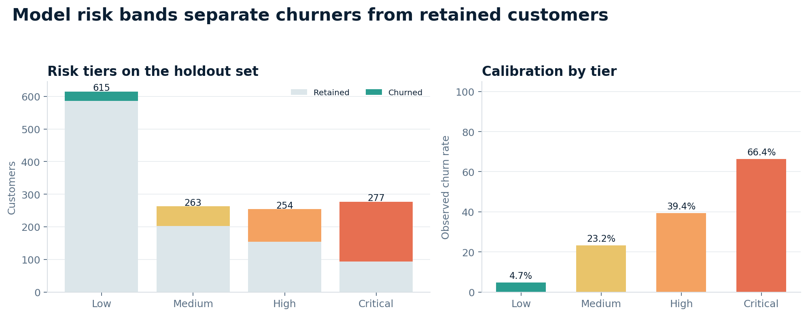

Contract
42.7%
Month-to-month churn
Versus 11.3% on one-year and 2.8% on two-year contracts. Commitment length is the strongest segment signal.
Customer retention intelligence · portfolio project
A reproducible churn model and retention workbench built on 7,043 IBM Telco customers. It turns a probability ranking into an explicit contact policy — with the evaluation, trade-offs, and limits on the table.
Logistic regression · 0.846 holdout ROC-AUC · threshold tuned out-of-fold · one-time holdout evaluation

01 · What the data says
Three observable account facts carry most of the signal — and most of the revenue exposure. The model is most useful when it ranks the next-best accounts inside those segments, not when it treats every customer as equally urgent.
Versus 11.3% on one-year and 2.8% on two-year contracts. Commitment length is the strongest segment signal.
The onboarding window carries the highest churn rate in the lifecycle. Risk falls sharply after the first year.
The highest-risk large segment — and the clearest campaign target. This is where risk and revenue exposure compound.

The actionable overlap
Month-to-month fiber accounts are not a niche. They are a large, measurable pool where a focused retention motion has the most leverage. The model's ranking decides which accounts inside that pool a team works first.

02 · The workbench
The Streamlit app turns the model into five linked surfaces: an executive overview, a single-customer scenario workbench, batch scoring, a threshold sandbox, and the method notes. Every page is built around a decision a retention team can actually make.

Change tenure, contract, services, and billing facts. The score, risk tier, expected annual revenue at risk, drivers, and retention plays update together.
One-at-a-time sensitivity against training baselines — transparent, and explicitly not causal.
Upload the raw Telco schema, validate rows, score every account, and download a campaign file.
Move the threshold and watch precision, recall, contact volume, and decile capture change.
A model card, data dictionary, and reproduction steps live beside the scores — not in a footnote.

Validate a raw customer file, score it in one pass, and export the ranked list with revenue-at-risk estimates.

Replay the holdout evaluation, compare five candidates, and test a different outreach threshold against the same data.
03 · Evaluation
Five candidate pipelines are compared with 5-fold stratified CV ROC-AUC. The winner is evaluated once on a 20% holdout; the decision threshold is tuned on out-of-fold training predictions, not on the test set.
PR-AUC 0.6532 · F1 0.6236 · Brier 0.1657 · top-decile lift 2.86× · top three deciles capture 66.0% of holdout churners.
Why logistic regression?
It beat gradient boosting on CV ROC-AUC (0.8474 vs 0.8456), is easier to explain and monitor, and serializes to a 6.6 KB bundle. The extra complexity did not buy better holdout ranking.


Decision policy
At the deployed threshold, 492 of 1,409 holdout accounts are flagged. The model catches 270 churners and contacts 222 retained customers. A lower threshold catches more churn; a higher one protects outreach capacity.

Permutation importance
The top five features account for 86.5% of the measured holdout importance. Correlated features can share credit.
04 · Method
A deterministic CLI takes the raw CSV to a serialized bundle, evaluation tables, and generated figures. The app reads those artifacts; it never retrains on page load.
Check required columns, unique customer IDs, numeric tenure and charges, and valid target labels.
Handle 11 blank TotalCharges records explicitly; add AvgMonthlySpend, ServiceCount, and IsNewCustomer.
Logistic regression, random forest, gradient boosting, histogram gradient boosting, and extra trees under 5-fold stratified CV.
Select the model by CV ROC-AUC. Tune the F1 threshold on out-of-fold training predictions, not on the holdout.
Score the 20% holdout, refit the winner on all labelled rows, and serialize the model, threshold, baselines, and metadata.
05 · Limits & responsible use
A useful model is honest about its boundary. This is a retrospective risk-ranking exercise, not a causal uplift study, a production credit system, or a guarantee of customer behavior.
One historical 80/20 split. There is no time-based validation or live experiment, and the historical Telco base may not represent a current customer population.
The what-if view resets one feature at a time. It can tell you which account facts are associated with risk, but not what a retention offer will change.
The Brier score is 0.1657. Scores are useful for ranking and campaign sizing; they should not be read as an individual’s exact probability of leaving.
Gender and senior-citizen status are in the schema. Subgroup performance, score drift, alert rate, and realized churn require ongoing review before operational use.
Open source · MIT
The model bundle, evaluation tables, tests, Docker image, CI workflows, and the Streamlit workbench are all in the repository. No hidden notebooks, no hand-typed metrics.